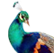

"飞禽走兽" 是一款娱乐刺激的大型轮盘游戏,也是当下最流行的街机游戏之一。飞禽走兽由飞禽类，走兽类，鲨鱼等三大投注区类组成。根据每种生物的倍数进行下注，以下博大取得最高额分数的游戏。
"飞禽走兽"一共有11块下注区域,每一块区域的下注中奖倍率各不相同。压中后获得对应倍数的奖励如下;
飞禽类:  8倍, 8倍,
8倍, 6倍, 13倍,飞禽总投区2倍。
6倍, 13倍,飞禽总投区2倍。
走兽类: 6倍, 8倍,
8倍, 8倍,
8倍, 12倍,走兽总投区2倍。
12倍,走兽总投区2倍。
鲨鱼:  24倍, 100倍。
24倍, 100倍。
通杀: 所有位置下注失败。
送灯: 先返还所有玩家投注本金。再随机位置中奖,最大限度的赔完庄家携带金额。
1.玩家进入游戏后,可以选择不同的额度的筹码进行下注;
2.开奖中无法进行下注,请等待下局开始。